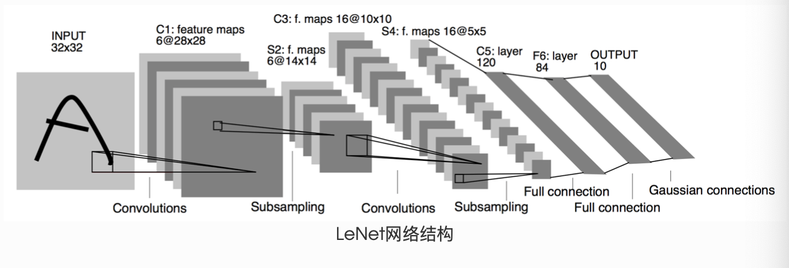
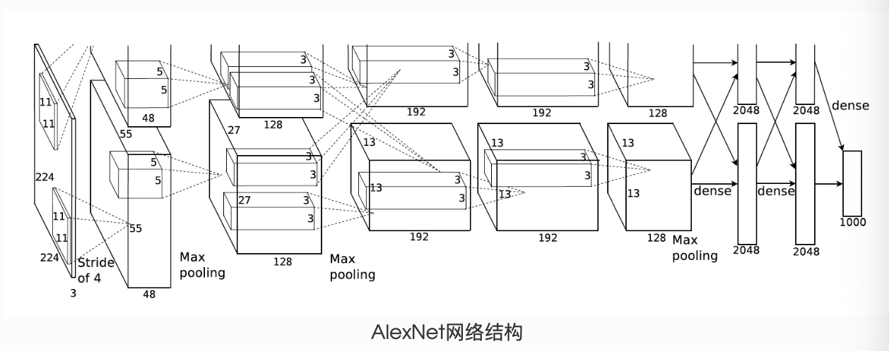

3.4 模型构建⚓︎
人工智能的第三次浪潮受益于卷积神经网络的出现和BP反向传播算法的实现，随着深度学习的发展，研究人员研究出了许许多多的模型，PyTorch中神经网络构造一般是基于nn.Module类的模型来完成的，它让模型构造更加灵活。
经过本节的学习，你将收获：
- PyTorch中神经网络的构造方法
- PyTorch中特殊层的构建
- LeNet的PyTorch实现
3.4.1 神经网络的构造⚓︎
Module 类是 torch.nn 模块里提供的一个模型构造类，是所有神经网络模块的基类，我们可以继承它来定义我们想要的模型。下面继承 Module 类构造多层感知机。这里定义的 MLP 类重载了 Module 类的 __init__ 函数和 forward 函数。它们分别用于创建模型参数和定义前向计算（正向传播）。下面的 MLP 类定义了一个具有两个隐藏层的多层感知机。
import torch
from torch import nn
class MLP(nn.Module):
# 声明带有模型参数的层，这里声明了两个全连接层
def __init__(self, **kwargs):
# 调用MLP父类Block的构造函数来进行必要的初始化。这样在构造实例时还可以指定其他函数
super(MLP, self).__init__(**kwargs)
self.hidden = nn.Linear(784, 256)
self.act = nn.ReLU()
self.output = nn.Linear(256,10)
# 定义模型的前向计算，即如何根据输入x计算返回所需要的模型输出
def forward(self, x):
o = self.act(self.hidden(x))
return self.output(o)
以上的 MLP 类中⽆须定义反向传播函数。系统将通过⾃动求梯度⽽自动⽣成反向传播所需的 backward 函数。
我们可以实例化 MLP 类得到模型变量 net 。下⾯的代码初始化 net 并传入输⼊数据 X 做一次前向计算。其中， net(X) 会调用 MLP 继承⾃自 Module 类的 __call__ 函数，这个函数将调⽤用 MLP 类定义的forward 函数来完成前向计算。因此我们自己构造模型时需要明确定义模型的forward过程
X = torch.rand(2,784) # 设置一个随机的输入张量
net = MLP() # 实例化模型
print(net) # 打印模型
net(X) # 前向计算
MLP(
(hidden): Linear(in_features=784, out_features=256, bias=True)
(act): ReLU()
(output): Linear(in_features=256, out_features=10, bias=True)
)
tensor([[ 0.0149, -0.2641, -0.0040, 0.0945, -0.1277, -0.0092, 0.0343, 0.0627,
-0.1742, 0.1866],
[ 0.0738, -0.1409, 0.0790, 0.0597, -0.1572, 0.0479, -0.0519, 0.0211,
-0.1435, 0.1958]], grad_fn=<AddmmBackward>)
注意，这里并没有将 Module 类命名为 Layer (层)或者 Model (模型)之类的名字，这是因为该类是一个可供⾃由组建的部件。它的子类既可以是⼀个层(如PyTorch提供的 Linear 类)，⼜可以是一个模型(如这里定义的 MLP 类)，或者是模型的⼀个部分。
3.4.2 神经网络中常见的层⚓︎
深度学习的一个魅力在于神经网络中各式各样的层，例如全连接层、卷积层、池化层与循环层等等。虽然PyTorch提供了⼤量常用的层，但有时候我们依然希望⾃定义层。这里我们会介绍如何使用 Module 来自定义层，从而可以被反复调用。
- 不含模型参数的层
我们先介绍如何定义一个不含模型参数的自定义层。下⾯构造的 MyLayer 类通过继承 Module 类自定义了一个将输入减掉均值后输出的层，并将层的计算定义在了 forward 函数里。这个层里不含模型参数。
import torch
from torch import nn
class MyLayer(nn.Module):
def __init__(self, **kwargs):
super(MyLayer, self).__init__(**kwargs)
def forward(self, x):
return x - x.mean()
测试，实例化该层，然后做前向计算
layer = MyLayer()
layer(torch.tensor([1, 2, 3, 4, 5], dtype=torch.float))
tensor([-2., -1., 0., 1., 2.])
- 含模型参数的层
我们还可以自定义含模型参数的自定义层。其中的模型参数可以通过训练学出。
Parameter 类其实是 Tensor 的子类，如果一个 Tensor 是 Parameter ，那么它会⾃动被添加到模型的参数列表里。所以在⾃定义含模型参数的层时，我们应该将参数定义成 Parameter ，除了直接定义成 Parameter 类外，还可以使⽤ ParameterList 和 ParameterDict 分别定义参数的列表和字典。
class MyListDense(nn.Module):
def __init__(self):
super(MyListDense, self).__init__()
self.params = nn.ParameterList([nn.Parameter(torch.randn(4, 4)) for i in range(3)])
self.params.append(nn.Parameter(torch.randn(4, 1)))
def forward(self, x):
for i in range(len(self.params)):
x = torch.mm(x, self.params[i])
return x
net = MyListDense()
print(net)
class MyDictDense(nn.Module):
def __init__(self):
super(MyDictDense, self).__init__()
self.params = nn.ParameterDict({
'linear1': nn.Parameter(torch.randn(4, 4)),
'linear2': nn.Parameter(torch.randn(4, 1))
})
self.params.update({'linear3': nn.Parameter(torch.randn(4, 2))}) # 新增
def forward(self, x, choice='linear1'):
return torch.mm(x, self.params[choice])
net = MyDictDense()
print(net)
下面给出常见的神经网络的一些层，比如卷积层、池化层，以及较为基础的AlexNet，LeNet等。
- 二维卷积层
二维卷积层将输入和卷积核做互相关运算，并加上一个标量偏差来得到输出。卷积层的模型参数包括了卷积核和标量偏差。在训练模型的时候，通常我们先对卷积核随机初始化，然后不断迭代卷积核和偏差。
import torch
from torch import nn
# 卷积运算（二维互相关）
def corr2d(X, K):
h, w = K.shape
X, K = X.float(), K.float()
Y = torch.zeros((X.shape[0] - h + 1, X.shape[1] - w + 1))
for i in range(Y.shape[0]):
for j in range(Y.shape[1]):
Y[i, j] = (X[i: i + h, j: j + w] * K).sum()
return Y
# 二维卷积层
class Conv2D(nn.Module):
def __init__(self, kernel_size):
super(Conv2D, self).__init__()
self.weight = nn.Parameter(torch.randn(kernel_size))
self.bias = nn.Parameter(torch.randn(1))
def forward(self, x):
return corr2d(x, self.weight) + self.bias
卷积窗口形状为 \(p \times q\) 的卷积层称为 \(p \times q\) 卷积层。同样， \(p \times q\) 卷积或 \(p \times q\) 卷积核说明卷积核的高和宽分别为 \(p\) 和 \(q\)，一般情况下，\(p=q\)。
填充(padding)是指在输⼊高和宽的两侧填充元素(通常是0元素)。
下面的例子里我们创建一个⾼和宽为3的二维卷积层，然后设输⼊高和宽两侧的填充数分别为1。给定一个高和宽为8的输入，我们发现输出的高和宽也是8。
import torch
from torch import nn
# 定义一个函数来计算卷积层。它对输入和输出做相应的升维和降维
def comp_conv2d(conv2d, X):
# (1, 1)代表批量大小和通道数
X = X.view((1, 1) + X.shape)
Y = conv2d(X)
return Y.view(Y.shape[2:]) # 排除不关心的前两维:批量和通道
# 注意这里是两侧分别填充1⾏或列，所以在两侧一共填充2⾏或列
conv2d = nn.Conv2d(in_channels=1, out_channels=1, kernel_size=3,padding=1)
X = torch.rand(8, 8)
comp_conv2d(conv2d, X).shape
torch.Size([8, 8])
当卷积核的高和宽不同时，我们也可以通过设置高和宽上不同的填充数使输出和输入具有相同的高和宽。
# 使用高为5、宽为3的卷积核。在⾼和宽两侧的填充数分别为2和1
conv2d = nn.Conv2d(in_channels=1, out_channels=1, kernel_size=(5, 3), padding=(2, 1))
comp_conv2d(conv2d, X).shape
torch.Size([8, 8])
conv2d = nn.Conv2d(1, 1, kernel_size=(3, 5), padding=(0, 1), stride=(3, 4))
comp_conv2d(conv2d, X).shape
torch.Size([2, 2])
填充可以增加输出的高和宽。这常用来使输出与输入具有相同的高和宽。
步幅可以减小输出的高和宽，例如输出的高和宽仅为输入的高和宽的 ( 为大于1的整数)。
- 池化层
池化层每次对输入数据的一个固定形状窗口(⼜称池化窗口)中的元素计算输出。不同于卷积层里计算输⼊和核的互相关性，池化层直接计算池化窗口内元素的属性（均值、最大值等）。常见的池化包括最大池化或平均池化。在二维最⼤池化中，池化窗口从输入数组的最左上方开始，按从左往右、从上往下的顺序，依次在输⼊数组上滑动。当池化窗口滑动到某⼀位置时，窗口中的输入子数组的最大值即输出数组中相应位置的元素。
下面把池化层的前向计算实现在pool2d函数里。
import torch
from torch import nn
def pool2d(X, pool_size, mode='max'):
p_h, p_w = pool_size
Y = torch.zeros((X.shape[0] - p_h + 1, X.shape[1] - p_w + 1))
for i in range(Y.shape[0]):
for j in range(Y.shape[1]):
if mode == 'max':
Y[i, j] = X[i: i + p_h, j: j + p_w].max()
elif mode == 'avg':
Y[i, j] = X[i: i + p_h, j: j + p_w].mean()
return Y
X = torch.tensor([[0, 1, 2], [3, 4, 5], [6, 7, 8]], dtype=torch.float)
pool2d(X, (2, 2))
tensor([[4., 5.],
[7., 8.]])
pool2d(X, (2, 2), 'avg')
tensor([[2., 3.],
[5., 6.]])
我们可以使用torch.nn包来构建神经网络。我们已经介绍了autograd包，nn包则依赖于autograd包来定义模型并对它们求导。一个nn.Module包含各个层和一个forward(input)方法，该方法返回output。
3.4.3 模型示例⚓︎
- LeNet

这是一个简单的前馈神经网络 (feed-forward network）（LeNet）。它接受一个输入，然后将它送入下一层，一层接一层的传递，最后给出输出。
一个神经网络的典型训练过程如下：
- 定义包含一些可学习参数(或者叫权重）的神经网络
- 在输入数据集上迭代
- 通过网络处理输入
- 计算 loss (输出和正确答案的距离）
- 将梯度反向传播给网络的参数
- 更新网络的权重，一般使用一个简单的规则：
weight = weight - learning_rate * gradient
import torch
import torch.nn as nn
import torch.nn.functional as F
class Net(nn.Module):
def __init__(self):
super(Net, self).__init__()
# 输入图像channel：1；输出channel：6；5x5卷积核
self.conv1 = nn.Conv2d(1, 6, 5)
self.conv2 = nn.Conv2d(6, 16, 5)
# an affine operation: y = Wx + b
self.fc1 = nn.Linear(16 * 5 * 5, 120)
self.fc2 = nn.Linear(120, 84)
self.fc3 = nn.Linear(84, 10)
def forward(self, x):
# 2x2 Max pooling
x = F.max_pool2d(F.relu(self.conv1(x)), (2, 2))
# 如果是方阵,则可以只使用一个数字进行定义
x = F.max_pool2d(F.relu(self.conv2(x)), 2)
x = x.view(-1, self.num_flat_features(x))
x = F.relu(self.fc1(x))
x = F.relu(self.fc2(x))
x = self.fc3(x)
return x
def num_flat_features(self, x):
size = x.size()[1:] # 除去批处理维度的其他所有维度
num_features = 1
for s in size:
num_features *= s
return num_features
net = Net()
print(net)
Net(
(conv1): Conv2d(1, 6, kernel_size=(5, 5), stride=(1, 1))
(conv2): Conv2d(6, 16, kernel_size=(5, 5), stride=(1, 1))
(fc1): Linear(in_features=400, out_features=120, bias=True)
(fc2): Linear(in_features=120, out_features=84, bias=True)
(fc3): Linear(in_features=84, out_features=10, bias=True)
)
我们只需要定义 forward 函数，backward函数会在使用autograd时自动定义，backward函数用来计算导数。我们可以在 forward 函数中使用任何针对张量的操作和计算。
一个模型的可学习参数可以通过net.parameters()返回
params = list(net.parameters())
print(len(params))
print(params[0].size()) # conv1的权重
10
torch.Size([6, 1, 5, 5])
input = torch.randn(1, 1, 32, 32)
out = net(input)
print(out)
清零所有参数的梯度缓存，然后进行随机梯度的反向传播：
net.zero_grad()
out.backward(torch.randn(1, 10))
注意：torch.nn只支持小批量处理 (mini-batches）。整个 torch.nn 包只支持小批量样本的输入，不支持单个样本的输入。比如，nn.Conv2d 接受一个4维的张量，即nSamples x nChannels x Height x Width如果是一个单独的样本，只需要使用input.unsqueeze(0) 来添加一个“假的”批大小维度。
-
torch.Tensor- 一个多维数组，支持诸如backward()等的自动求导操作，同时也保存了张量的梯度。 -
nn.Module- 神经网络模块。是一种方便封装参数的方式，具有将参数移动到GPU、导出、加载等功能。 -
nn.Parameter- 张量的一种，当它作为一个属性分配给一个Module时，它会被自动注册为一个参数。 -
autograd.Function- 实现了自动求导前向和反向传播的定义，每个Tensor至少创建一个Function节点，该节点连接到创建Tensor的函数并对其历史进行编码。
下面再介绍一个比较基础的案例AlexNet
- AlexNet

class AlexNet(nn.Module):
def __init__(self):
super(AlexNet, self).__init__()
self.conv = nn.Sequential(
nn.Conv2d(1, 96, 11, 4), # in_channels, out_channels, kernel_size, stride, padding
nn.ReLU(),
nn.MaxPool2d(3, 2), # kernel_size, stride
# 减小卷积窗口，使用填充为2来使得输入与输出的高和宽一致，且增大输出通道数
nn.Conv2d(96, 256, 5, 1, 2),
nn.ReLU(),
nn.MaxPool2d(3, 2),
# 连续3个卷积层，且使用更小的卷积窗口。除了最后的卷积层外，进一步增大了输出通道数。
# 前两个卷积层后不使用池化层来减小输入的高和宽
nn.Conv2d(256, 384, 3, 1, 1),
nn.ReLU(),
nn.Conv2d(384, 384, 3, 1, 1),
nn.ReLU(),
nn.Conv2d(384, 256, 3, 1, 1),
nn.ReLU(),
nn.MaxPool2d(3, 2)
)
# 这里全连接层的输出个数比LeNet中的大数倍。使用丢弃层来缓解过拟合
self.fc = nn.Sequential(
nn.Linear(256*5*5, 4096),
nn.ReLU(),
nn.Dropout(0.5),
nn.Linear(4096, 4096),
nn.ReLU(),
nn.Dropout(0.5),
# 输出层。由于这里使用Fashion-MNIST，所以用类别数为10，而非论文中的1000
nn.Linear(4096, 10),
)
def forward(self, img):
feature = self.conv(img)
output = self.fc(feature.view(img.shape[0], -1))
return output
net = AlexNet()
print(net)
AlexNet(
(conv): Sequential(
(0): Conv2d(1, 96, kernel_size=(11, 11), stride=(4, 4))
(1): ReLU()
(2): MaxPool2d(kernel_size=3, stride=2, padding=0, dilation=1, ceil_mode=False)
(3): Conv2d(96, 256, kernel_size=(5, 5), stride=(1, 1), padding=(2, 2))
(4): ReLU()
(5): MaxPool2d(kernel_size=3, stride=2, padding=0, dilation=1, ceil_mode=False)
(6): Conv2d(256, 384, kernel_size=(3, 3), stride=(1, 1), padding=(1, 1))
(7): ReLU()
(8): Conv2d(384, 384, kernel_size=(3, 3), stride=(1, 1), padding=(1, 1))
(9): ReLU()
(10): Conv2d(384, 256, kernel_size=(3, 3), stride=(1, 1), padding=(1, 1))
(11): ReLU()
(12): MaxPool2d(kernel_size=3, stride=2, padding=0, dilation=1, ceil_mode=False)
)
(fc): Sequential(
(0): Linear(in_features=6400, out_features=4096, bias=True)
(1): ReLU()
(2): Dropout(p=0.5)
(3): Linear(in_features=4096, out_features=4096, bias=True)
(4): ReLU()
(5): Dropout(p=0.5)
(6): Linear(in_features=4096, out_features=10, bias=True)
)
)
创建日期: November 30, 2023